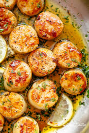
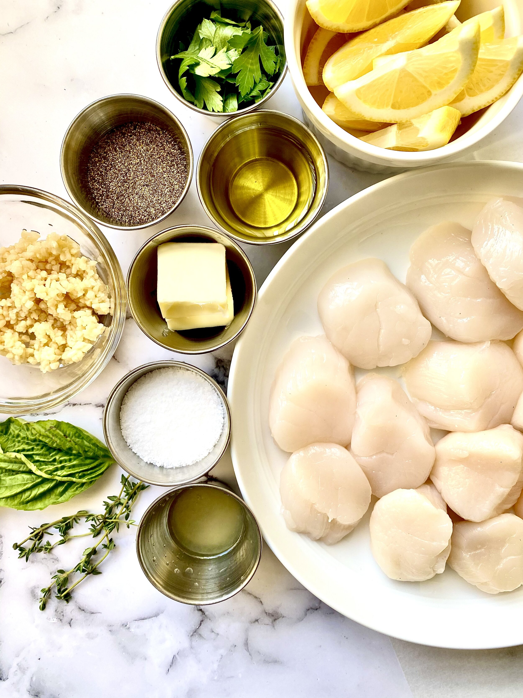
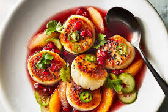

Scallops Recipe

Scallops are shellfish that when cooked properly,are delicate and tender with a pleasantly mild and slightly sweet taste.You'll find fresh scallops at the seafood department of most grocery stores or your local finsh monger. Scallop is takes less than 10 mins to prepare.They are one of the easiest things to cook, especially if you sear them in a pan.
Ingredients
- Butter:Start by melting a stick and a half of butter in skillet
- Garlic:fresh minced garlic cooked in butter creates a bold flavor base
- Lemon juice:Fresh lemon juice adds welcome brightness
- Seasonings:Salt and pepper enhance the overall flavor of the scallop.Also basil is to be seared over the scallops,I highly recommend it.
- Scallops:Of course, you'll need scallops! Two pounds of it should serve about 6 heads

Steps
- Find the side muscle on 1 1/2 pounds sea scallops if still attached. Pull the muscle off and discard.
- Pat the scallops dry with paper towels.
- Cook the garlic in melted butter.
- Cook the scallops on both sides until opaque, then transfer to a platter.
- Whisk the lemon juice and seasonings into the butter, then pour over the scallops.

Scallop is an easy food to make when you do not have enough time to cook. With the help of my ingredients and steps I hope you can make yours too.It takes less than 10 mins of your to be ready.Try it now!